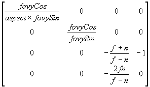

#include <nitro/fx/fx_mtx44.h>
void MTX_PerspectiveW( fx32 fovySin, fx32 fovyCos, fx32 aspect, fx32 n, fx32 f, fx32 scaleW, MtxFx44 * mtx );
| fovySin | Sine value of the field-of-view angle (view angle) in y-direction/2 |
| fovyCos | Cosine value of the field-of-view angle (view angle) in y-direction/2 |
| aspect | Ratio of width of view field to height of view field (aspect ratio: width/height of the field of view) |
| n | Distance from eyepoint to the near clip plane |
| f | Distance from eyepoint to the far clip plane |
| scaleW | Fine adjustment parameter for the view volume |
| mtx | The pointer to a 4x4 matrix. |
None.
*This function sets the projection matrix to *mtx. It uses the Divider. The diagram shows the matrix that is set.
 × scaleW
MTX_Perspectve, G3_PerspectiveW, G3_Perspective
06/21/2004 Initial version
CONFIDENTIAL